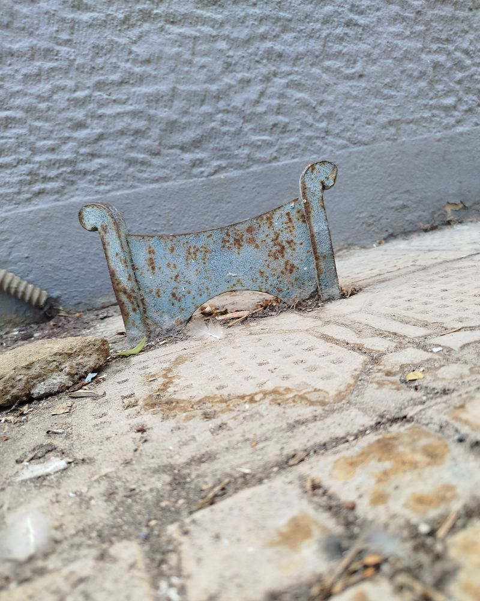
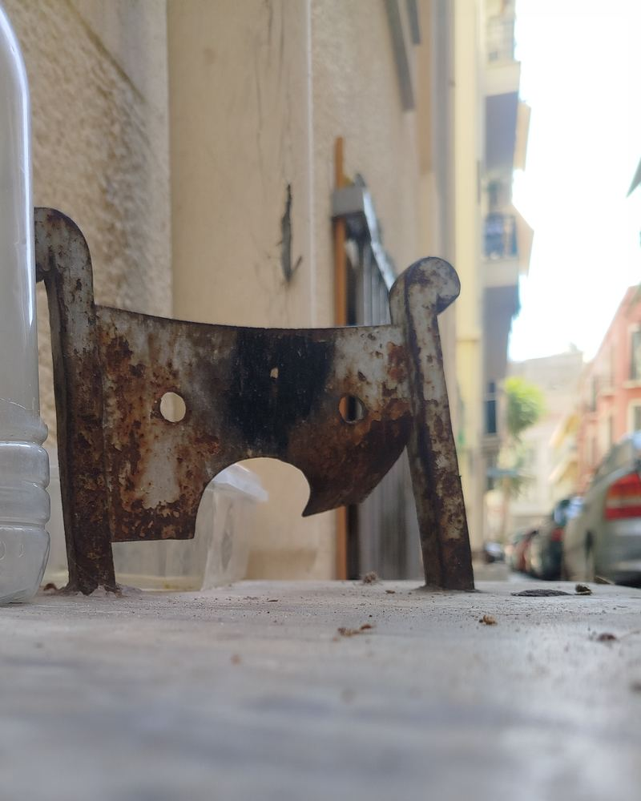

You walk past a hundred of these. You never look.
First one I saw, I thought it was junk.
Little piece of rusted iron, stuck in the ground next to an old door. I stepped over it. Forgot it in two seconds.
Then I saw another. Same thing, same spot — always by a door, always old. Then another. The whole city was full of them, and I was the only idiot staring at the ground.
So I asked someone. What is this?
He said: boot scraper.
Boot scraper? For what?
And then he told me, and I just stood there.

When Athens was mud
Okay — forget the Athens you're standing in. The asphalt, the scooters, the freddo in everyone's hand. Gone.
A hundred and fifty years ago most of these streets were dirt. Just dirt. A city full of horses and mules and rain — that's mud. Mud that climbs your shoes and walks into the house with you.
So before you went inside, before anyone let you in, you dragged your shoe across that little iron blade. Left the street outside, where it belongs.
The mud left. The scrapers stayed.
Then the city got older. Threw asphalt over the mud. Horses turned into cars. The scrapers had nothing left to clean.
And nobody pulled them out.
They just stayed. Rusting next to doors that have opened for five families, doing a job that ended a lifetime ago.
That's the thing nobody tells you about Athens. The Acropolis says "I'm old" — yeah, I know, it's on the ticket. This rusty little thing says something better: this city is so lived-in it forgets to clean up after itself. The history isn't behind a rope. It's under your shoe.
How to find one
Not hard. You just have to look down.
- Find an old house. The neoclassical ones — tall wooden doors, marble step, paint peeling off in three colours.
- Look at the foot of the door. Left or right of the step. A little iron blade between two curled posts, usually rusted, sometimes painted over by someone who didn't know what it was either.
- Walk the old neighbourhoods. Plaka, Psyrri, Metaxourgeio, Kerameikos, Exarchia, Koukaki. Anywhere the old houses made it.

So walk slower. Next old street, look down by the doors. You'll find one. And for one second you'll see the mud, the mules, some guy scraping his boots in the rain — and you're standing exactly where he stood.
That's the whole thing. Stop scrolling the screen. Scroll the world.